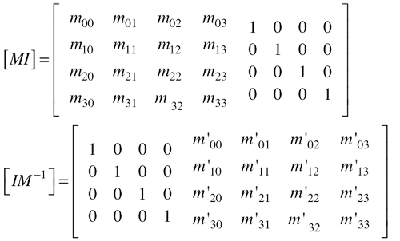
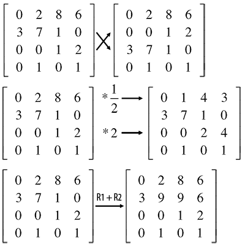
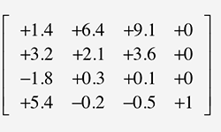
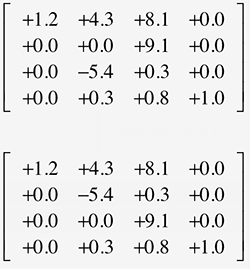
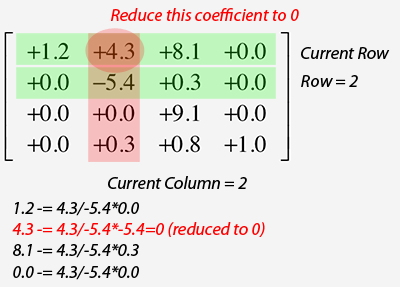

In this lesson we will show how the inverse of a matrix can be computed using a technique known as the Gauss-Jordan (or reduced row) elimination. Computing the inverse of matrix implies a couple of things starting with the fact that the matrix is invertible in the first place (a matrix is not necessarily invertible). First, to be invertible a matrix has to be a square matrix (it has as many rows as it has columns for instance 2x2, 3x3, 4x4, etc.) and also the determinant of the matrix has to be different than zero (to learn about the determinant of a matrix check the Linear Algebra lesson in the Basic section). Any matrix that has a zero determinant is said to be singular (meaning it is not invertible).
To compute the inverse of the matrix M we will write M and also write next to it the identity matrix (an identity matrix is a square matrix with ones on the diagonal and zeros elsewhere). We say that we augment M by the identity. Then we will row reduced this augmented (or adjoined) matrix.
Before we get started, remember that a matrix can be seen as a system of linear equations which can solved using what we call row elementary operations. Row elementary operations have the property to preserve the solution set by the matrix. There are three such operations: you can swap the rows of a matrix (operation 1), multiply each coefficients of a row by a non zero constant (operation 2), and replace a row with the sum of itself and the multiple of another row (operation 3). These are illustrated with the following examples (row switching, row multiplication and row addition):
In the second example, we simply multiply all the coefficients of row 1 by 1/2 and the coefficients of row 3 by 2. In the third example, we add the coefficients from row 1 to the coefficients of row 2. The idea behind the Gauss-Jordan elimination is to use these elementary row operations to transform the 4x4 matrix on the left inside of the augmented matrix into the identity matrix (we say that M is row-reduced). By performing the same row operations to the 4x4 identity matrix on the right inside of the augmented matrix we obtain the inverse matrix.
Step 1: set the row so that the pivot is different than zero
The coefficients making the diagonal of the matrix are called the pivots of the matrix.

As we mentioned earlier, the goal of the matrix inversion process is to use the row elementary operations to set the pivot of each column to 1 and all the other coefficients to 0 (at the end of this process we will get the identify matrix). To achieve this, the best is to row-reduced each column one after the other starting from the left. Proceeding from left to right, guarantees that as we proceed from column to column, we do not change the values of the columns which have been already row-reduced.

The first thing we will do is to examine the value for the pivot coefficient for the current column (the column being processed). In order for our technique to work, this value has to be different than zero. If it is different than zero then we can directly move to step two. If it is equal to zero, we will need to find another row in the matrix for this column which value is different than zero, and swap these two rows (operation 1). However more than one row may have values different than zero ? So which one should we select ? We will pickup the row which absolute value is the highest.
In the example on the right, we are looking at the pivot coefficient of the second column. Because the value of that coefficient is zero, we swap row 2 with the rows of the second column which absolute value is the greatest (in this example row 3).
We use the Gauss-Jordan elimination method to transform the original matrix to the identity matrix and perform at the same time the same operations on another matrix (mat) which, at the beginning of the function (line 3), is set to the identity matrix (the Matrix class constructor set the matrix to the identity matrix by default). At the end of this process, our original matrix is set with the coefficient from the second matrix (line 39 in the final code). If we can't find another value for the pivot coefficient (that is if all the other values in the column are zero) then the matrix can't be inverted and is singular (line 11).
Step 2: Set each row in the column to 0
If the current column we are processing has a valid pivot coefficient, then we can proceed to the next step. We will reduce each coefficient of the column (apart from the pivot coefficient which we won't touch for now) to zero. In English that won't make much sense but here it is. Lets call 'm', the current cofficient (for the current column/row) that we want to reduce to zero. We will subtract m muliplied by each coefficient of the row which index is the same as the index of the current column, from each coefficients of the current row (operation 2 and 3). The technique will work if m itself is divided by the pivot coefficient value (line 4). This is illustrated for one coefficient in the following example. The second column is the current column. We want to reduce the first coefficient (row 0) from the current column (4.3) to zero. For each coefficient of the first row (say C0j), we take the corresponding coefficient (C1j) from the second row (because we are processing the second column), multiply this coefficient by the coefficient we want to reduce by zero (C02) divided by the pivot coefficient from the second column (C12) and subtract the resulting number from C0j.
In C++ code we get:
Note how we apply the same operation to the right hand side of the augmented matrix (line 8).
Step 3: scale all the pivots coefficients to 1
At the end of step 2, all the matrix coefficients should be 0 excepted the pivots coefficients which we need to set to 1. To do so, we simply need to scale the coefficients by their own value. Similarly to what we have done in step 2, we will loop over each row, then each column and divide the current coefficient by the pivot coefficient value of the current row:
Finally we just set the result of the current matrix with the result of our right inside matrix (mat in the code). We have inverted the matrix using the Gauss-Jordan elimination technique.
Here is the full code of the method:
What's Next?
There are two other popular methods to compute the inverse of a matrix. One is very similar to the technique we have just described and use a combination of what is called forward elimination and backward substitution. The second technique is based on computing determinants and will be explained in a future revision of this lesson.